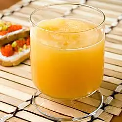

Bourbon

Ingredients
- 1 (6 ounce) can frozen orange juice concentrate
- 1 (12 ounce) can frozen lemonade concentrate
- 1 (46 fluid ounce) can pineapple juice
- 1 ½ cups white sugar
- 2 cups strong brewed black tea
- 2 cups bourbon whiskey
- 1 (2 liter) bottle lemon-lime flavored carbonated beverage
Directions
- In a large bowl or container, mix together the orange juice concentrate, lemonade concentrate, pineapple juice, sugar, tea, and whiskey. Transfer to shallow bowls or dishes, and freeze overnight.
- Remove the frozen mixture from the freezer and let stand for about 10 minutes. Chop with a wire whisk or potato masher to make a slushy consistency. Place scoops of the frozen slush into glasses, and top off with the lemon-lime flavored soda.